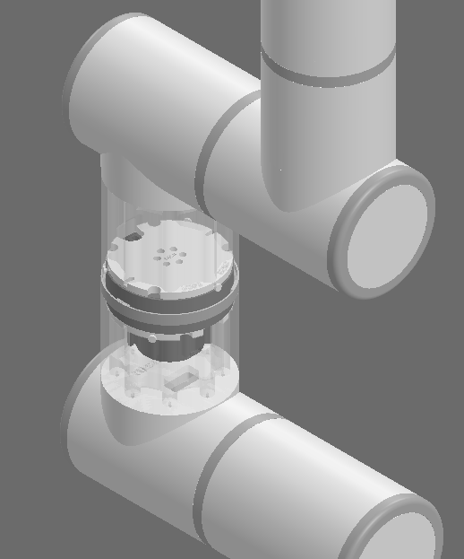

projects / 1
7-DOF Quasi-Direct-Drive Collaborative Robot Arm
A commercial-grade 7-DOF collaborative robot arm inspired by the Flexiv Rizon and Universal Robots UR series. Features a high-strength 3D-printed PETG link structure, quasi-direct-drive actuators, decentralized CAN bus architecture, and a 1:1 peak payload-to-mass ratio (~10 kg). Development Status: Full mechanical assembly and manual joint articulation are validated; autonomous trajectory control and ROS 2 / MoveIt2 integration are under active development.

- Elite payload-to-weight ratio: a 10 kg custom 3D-printed arm rated for a ~10 kg peak payload at full 1.11 m horizontal extension, and a 3–5 kg continuous working payload.
- Cut ~2 kg of structural mass through slicer parameter optimization — an isotropic 7% gyroid infill matrix maximizes torsional rigidity per gram.
- Industrial cobot architecture & surface modelling: Uniform cylindrical links, ergonomic surface-modelled joint transitions, interlocking spigot structural joints, and slip-ring internal routing.
- Complex CAD assembly: Managed a 5,000+ component model with multiple subassemblies, configurations, and sub-configurations to design and validate complex moving systems (SpeedPaks dropped rebuild times from 10 minutes to seconds).
- Decentralized CAN bus & transient-safe power: Daisy-chained RobStride QDD actuators communicating over differential CAN with localized buck regulation isolating logic from motor inductive spikes.
01CAD & Surface Modelling
Sculpted in SolidWorks using multi-guide boundary surfaces and lofts to achieve continuous cylindrical cobot contours, packaging seven high-torque RobStride actuators with sub-millimeter internal tolerances.
01.1 External Assembly & Kinematic Surfacing
Outer link curvature, ergonomic knuckle geometries, and workspace reach envelopes engineered for cobot collaborative aesthetics and clean tool mounting.
01.2 Wireframe & Internal Packaging Architecture
Transparent CAD cutaways illustrating internal structural ribbing, actuator mounting clearances, nested angular contact bearing races, and central wiring conduits through the 7-axis kinematic chain.
02Cassette Ring Modular Joints
Custom 3D-printed spiral cassette rings house internal flexible wire coils to permit continuous 360° joint rotation without cable tangling or mechanical fatigue.

03Electrical Architecture & CAN Bus
A decentralized multi-drop CAN bus connects all seven RobStride actuators over a single shielded twisted pair, backed by transient-protected 48V DC power distribution.

04Motor Module & Buck Regulation
High-power RobStride quasi-direct-drive actuators are paired with dedicated step-down buck regulation modules to isolate logic voltages from heavy inductive motor transients.


05Arm Assembly & Joint Conduit
Structural links were fabricated in high-strength PETG with 7% gyroid infill, assembled with spigot shear joints, and routed with central internal wiring conduits.
06Parallel Jaw Gripper
A compact dual rack-and-pinion parallel-jaw gripper actuated by a high-torque coreless servo delivers symmetrical grasping force and swappable high-friction finger pads.
07Control Hub & Power Enclosure
The standalone control hub integrates an ESP32 master controller, CAN transceiver circuitry, 48V power distribution blocks, and a master emergency-stop switch inside a fan-cooled enclosure.
08Weighted Base Mount & Stability Pedestal
To counteract heavy tipping moments at full 1.11 m horizontal extension, a custom steel mounting flange anchors the arm securely to heavy barbell ballast plates.
09Future Goals & Technical Roadmap
With physical assembly and manual kinematic validation complete, active development is transitioning to software simulation, autonomous trajectory generation, and impedance control.
- URDF Generation & Kinematic Verification: Generating an accurate Unified Robot Description Format (URDF) file with exact link centers of mass, inertia tensors, joint limits, and visual/collision meshes.
- High-Fidelity MuJoCo Physics Simulation: Importing the robot URDF into MuJoCo for reinforcement learning policy training, sim-to-real domain randomization, and obstacle avoidance validation.
- ROS 2 & MoveIt2 Autonomous Trajectory Planning: Implementing ROS 2 Humble nodes with MoveIt2 for Cartesian path planning, collision-free obstacle avoidance, and numerical inverse kinematics (IK) solving.
- Backdrivable Impedance & Gravity Compensation: Developing active feed-forward gravity compensation and Cartesian impedance control leveraging the quasi-direct-drive actuators' natural torque transparency.
- Closed-Loop Gripper Tactile Control: Integrating piezoresistive pressure arrays onto parallel gripper fingertips for adaptive slip detection, compliant grasping, and delicate object manipulation.